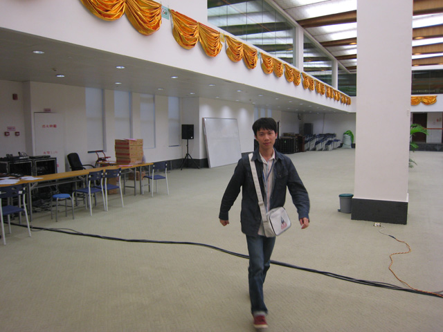

男子组第八轮对阵表
#1 男子组第八轮对阵表作者：无尽 发表时间：2012-6-23 19:14:25
台号 姓名 积分 比赛结果 姓名 积分
1 杜卫鹏, (28) [5.5] : 陈靖, (3) [6]
2 黄圣明, (8) [5.5] : 高俊明, (15) [5]
3 艾显平, (1) [5] : 梅凡, (6) [5]
4 谢增忠, (13) [5] : 吴镝, (4) [4.5]
5 龚胜, (9) [4.5] : 奚振扬, (12) [4.5]
6 王鹏, (19) [4] : 兰志仁, (2) [4]
7 谭鑫麟, (5) [4] : 洪士光, (11) [4]
8 江齐文, (26) [4] : 黄立勤, (7) [3.5]
9 何骏, (21) [3.5] : 陈经辉, (35) [3.5]
10 金洪利, (24) [3.5] : 吴博, (33) [3.5]
11 黄甸甸, (27) [3.5] : 何其强, (32) [3.5]
12 龙梓锋, (30) [3] : 曾方, (14) [3]
13 吴圣仰, (25) [3] : 陈凯迪, (36) [3]
14 郭海森, (18) [2.5] : 陈祖信, (31) [3]
15 马萧, (17) [2.5] : 彭土生, (20) [0]
16 陈新, (10) [2] : 高杰琦, (22) [2]
17 金恩泽, (29) [2] : 廖镇焕, (34) [2]
18 陈泽立, (23) [1] : 侯良烺, (16) [2]
#2 Re:男子组第八轮对阵表作者：西北狼梦魂 发表时间：2012-6-23 19:17:28
 目测对了 师叔加油
目测对了 师叔加油#3 Re:男子组第八轮对阵表作者：名儿 发表时间：2012-6-23 19:19:34
 无尽MM辛苦了，可惜这次比赛我没有时间来观战．
无尽MM辛苦了，可惜这次比赛我没有时间来观战．#4 Re:男子组第八轮对阵表作者：瑞雪星光 发表时间：2012-6-23 19:24:28
［此帖子已被 瑞雪星光 在 2012-6-23 19:24:57 编辑过］
#5 Re:男子组第八轮对阵表作者：三道 发表时间：2012-6-23 19:26:58
 楼上差点暴露身份
楼上差点暴露身份
#6 Re:男子组第八轮对阵表作者：白衣神童小剑魔 发表时间：2012-6-23 19:29:27
幽灵给力啊［ 絕版賭徒 于 2012-6-23 19:33:33 时花20金币送鲜花一朵］
［ 絕版賭徒 于 2012-6-23 19:33:33 时花20金币送鲜花一朵］
［ 絕版賭徒 于 2012-6-23 19:33:33 时花20金币送鲜花一朵］
［ 絕版賭徒 于 2012-6-23 19:33:33 时花20金币送鲜花一朵］
［ 絕版賭徒 于 2012-6-23 19:33:33 时花20金币送鲜花一朵］
［ 絕版賭徒 于 2012-6-23 19:33:33 时花20金币送鲜花一朵］
［ 絕版賭徒 于 2012-6-23 19:33:33 时花20金币送鲜花一朵］
［ 絕版賭徒 于 2012-6-23 19:33:33 时花20金币送鲜花一朵］
［ 絕版賭徒 于 2012-6-23 19:33:33 时花20金币送鲜花一朵］
#7 Re:男子组第八轮对阵表作者：絕版賭徒 发表时间：2012-6-23 19:33:57
楼上送花不留名，我到这补上［ 白衣神童小剑魔 于 2012-6-23 21:36:05 时花20金币送鲜花一朵］
［ 白衣神童小剑魔 于 2012-6-23 21:36:05 时花20金币送鲜花一朵］
［ 白衣神童小剑魔 于 2012-6-23 21:36:05 时花20金币送鲜花一朵］
［ 白衣神童小剑魔 于 2012-6-23 21:36:05 时花20金币送鲜花一朵］
［ 白衣神童小剑魔 于 2012-6-23 21:36:05 时花20金币送鲜花一朵］
#8 Re:男子组第八轮对阵表作者：力点 发表时间：2012-6-23 19:41:30
 女的是不是比完了？
女的是不是比完了？#9 Re:男子组第八轮对阵表作者：灯塔连珠 发表时间：2012-6-23 19:50:52
幽灵的真名叫啥呀？问一下，谁知道#10 Re:男子组第八轮对阵表作者：絕版賭徒 发表时间：2012-6-23 19:54:22
高俊明#11 Re:男子组第八轮对阵表作者：乐0909 发表时间：2012-6-23 20:00:36
Re:男子组第八轮对阵表没看到女队结果呢
#12 Re:男子组第八轮对阵表作者：梧桐风 发表时间：2012-6-23 20:10:30
冰魔飞飞加油#13 Re:男子组第八轮对阵表作者：猪小姐 发表时间：2012-6-23 20:56:28
 幽灵小帅锅好彪悍撒~~~福建加油哇~~~~~~
幽灵小帅锅好彪悍撒~~~福建加油哇~~~~~~#14 Re:猪小姐【==Re:男子组第八轮对阵表==】作者：梧桐风 发表时间：2012-6-23 20:58:52
引用：整天就知道看师哥，出息
原文由 猪小姐 发表于 2012-6-23 20:56:28 :
#15 Re:男子组第八轮对阵表作者：方圆之外 发表时间：2012-6-23 21:12:07
看了看分。。就赢了个谭帅哥。分就上来了。。不过也不错呢。毕竟没怎么参加过比赛。。顶。#16 Re:男子组第八轮对阵表作者：aabb 发表时间：2012-6-23 21:28:39
求爆照
#17 Re:梧桐风【==Re:猪小姐【==Re:男子组第八轮对阵表==】==】作者：小丸.net 发表时间：2012-6-23 21:46:07
引用：女孩子不看帅哥怎么办，她们都那么忙。。。。。
原文由 梧桐风 发表于 2012-6-23 20:58:52 :引用：整天就知道看师哥，出息
原文由 猪小姐 发表于 2012-6-23 20:56:28 :
#18 Re:男子组第八轮对阵表作者：黄药师 发表时间：2012-6-23 21:48:40
道道，幽灵加油！
#19 Re:黄药师【==Re:男子组第八轮对阵表==】作者：无尽 发表时间：2012-6-23 22:06:34

我今天特意来了个幽灵特写
#20 Re:男子组第八轮对阵表作者：清风明月月 发表时间：2012-6-23 22:09:48
道道，加油，
#21 Re:男子组第八轮对阵表作者：釣鱼岛岛主 发表时间：2012-6-23 22:48:11
靠 整天背着个包 里面是化妆品吗？#22 Re:男子组第八轮对阵表作者：絕版賭徒 发表时间：2012-6-23 22:57:07
楼上是江湖上俗称的胖蹬？
#23 Re:絕版賭徒【==Re:男子组第八轮对阵表==】作者：釣鱼岛岛主 发表时间：2012-6-23 23:00:22
引用：滚蛋
原文由 絕版賭徒 发表于 2012-6-23 22:57:07 :楼上是江湖上俗称的胖蹬？

#24 Re:小丸.net【==Re:梧桐风【==Re:猪小姐【==Re:男子组第八轮对阵表==】==】==】作者：猪小姐 发表时间：2012-6-23 23:05:07
引用：
原文由 小丸.net 发表于 2012-6-23 21:46:07 :引用：女孩子不看帅哥怎么办，她们都那么忙。。。。。
原文由 梧桐风 发表于 2012-6-23 20:58:52 :引用：整天就知道看师哥，出息
原文由 猪小姐 发表于 2012-6-23 20:56:28 :
海恋姐看看人家丸子。多学着点。。。
#25 Re:男子组第八轮对阵表作者：冰雪笑醉 发表时间：2012-6-23 23:38:29
话说无尽拍照技术确实不咋的
#26 Re:男子组第八轮对阵表作者：吉小鼠 发表时间：2012-6-24 1:01:53
 求帅哥~~~~
求帅哥~~~~#27 Re:男子组第八轮对阵表作者：掌棋宣传员 发表时间：2012-6-24 1:24:54
杀手们都很给力啊,希望继去年全锦赛之后再次包揽前三!!!